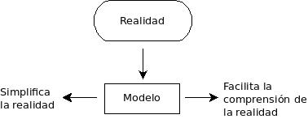
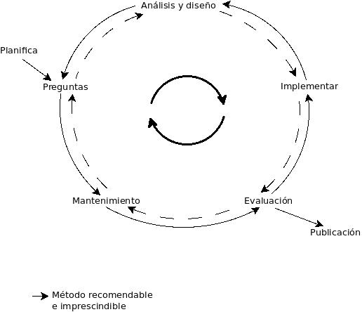
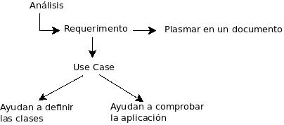

Análisis y diseño orientado a objetos
Solución robusta, extensible y segura.
Un modelo es una abstracción fiel del mundo real. El DOO trata sobre la construcción de buenos modelos.
Lenguaje unificado de modelos (UML).
Los modelos se usan para predecir el comportamiento de lo modelado en el mundo real.
¿Cómo construir modelos?

Lenguaje de modelos: convención de símbolos para representar relación y evaluación de conceptos mediante diagramas.
Proceso - Métodos de desarrollo.
Método en espiral - Iterativo.

Análisis: entender los requerimientos, planear los documentos.
Diseño: creación de los modelos de las clases, a partir de los cuales creamos el códigos.
Análisis.

Casos de uso (use case): descripción de los casos concretos de cómo será usado el software.
Expertos de dominio: personas con experiencia en el área en que tendrá que funcionar el producto.
Actor: persona o sistema que interactúa con el software desarrollado.